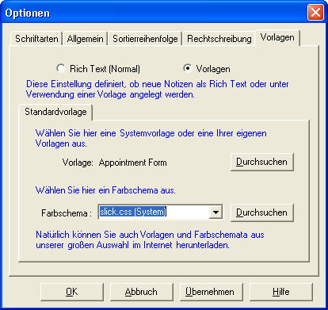

|

Hier finden Sie eine kurze Übersicht über die Optionen die Sie in Ideaspad einstellen können.
Zum Beispiel folgende :-
- Schriftarten für den Baum und den Texteditor.
- Einstellen welcher Knoten/Notiz beim Start von Ideaspad angezeigt werden soll.
- Sie können eigene Ideaspad Icons benutzen. Dieses Feature ist auch in einer Netzwerkumgebung mit mehreren Benutzern verfügbar. Ideaspad lädt die Icons in einer alphabetischen Reihenfolge. Daher empfehlen wir Ihnen die Icons zu nummerieren. Wenn Sie zum Beispiel 5 eigene Icons mit den Namen (1.gif, 2.gif, 3.gif, 4.gif, 5.gif) besitzen, sollte der Name des neuen Icons 6.gif lauten. Bitte achten Sie auf die Nummerierung, da diese die Anzeige der Icons beeinflusst.
- Sortierreihenfolge der Notizen innerhalb eines Knotens des Baums. Lesen Sie hierzu auch Knoten Eigenschaften.
- Einstellen eines Wörterbuches für die Rechtschreibprüfung
- Vorlagen. Wie nachfolgend beschrieben.
Sie können in der Registerkarte 'Vorlagen' einstellen, ob neue Notizen normale Texteinträge (RTF Dateien) oder Vorlagen sein sollen. Letzteres kann nützlich sein, wenn Sie Ideaspad für einen ganz bestimmten Zweck nutzen möchten und immer dieselbe Vorlage benötigen.

Um Ideaspad so zu konfigurieren, dass bei einer Neuanlage eines Knotens automatisch eine Vorlage eingebunden wird, müssen Sie das Auswahlfeld 'Vorlage' wählen und die gewünschte Vorlage durch die Schaltfläche 'Durchsuchen' auswählen.
Danach können Sie noch ein Farbschema als Standard definieren.
Farbschema Dateien sind Cascading Style Sheets (CSS). Nähere Informationen zu CSS Dateien finden Sie im Internet oder in Ihrem Buchladen um die Ecke.
Klicken Sie dann auf die Schaltfläche 'Übernehmen' und danach auf 'OK'.
How could this page be improved?
|
Copyright (c) Mindwarp Consultancy Ltd 2005 |